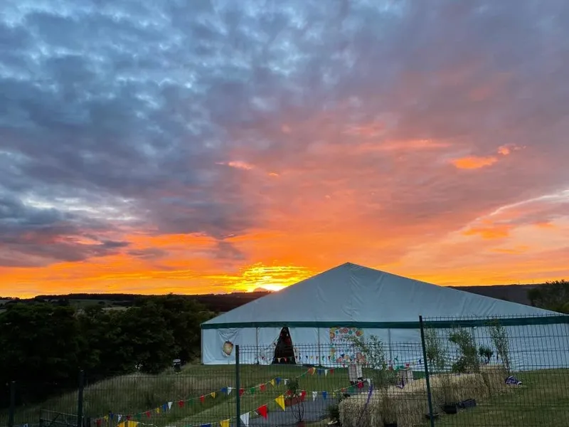
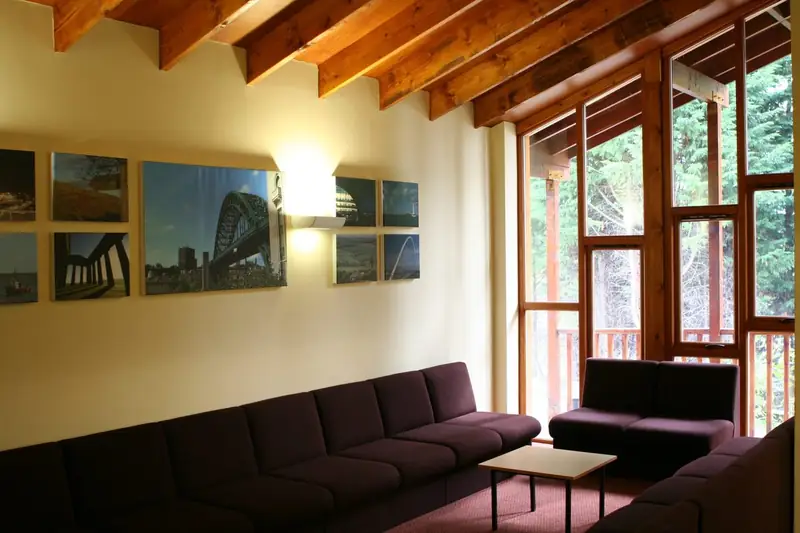
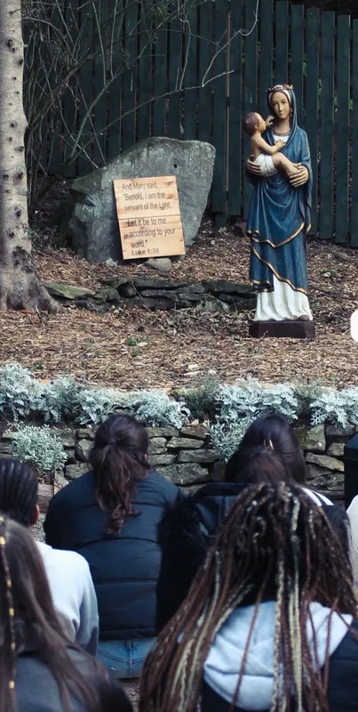
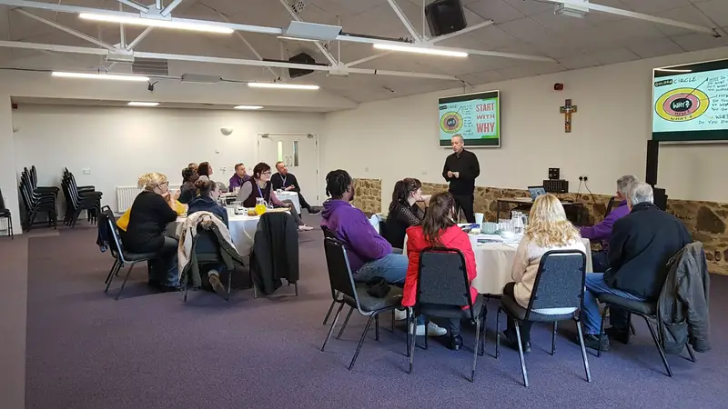
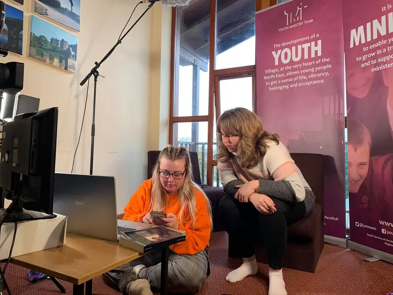

The Emmaus Youth Village
The home of everything we do, in the Derwent Valley. Available all year to schools, parishes and families.

Yours for the weekend
Close enough to the cities to reach easily, far enough to feel like countryside.
Young people helped to shape the Village. It is warm, modern and built for community: shared meals, late conversations and the fire pit at the centre.
- Five timber lodges with ensuite rooms
- An auditorium for worship, talks and gatherings
- Dining hall and shared spaces
- Grounds and the Derwent Valley on the doorstep
- A fire pit
- Guests
- Up to 90
- Lodges
- 5
- Ensuite rooms
- 11
- Opened
- 2010
- From Newcastle
- About 15 miles
- Address
- Pemberton Road, Allensford, DH8 9BA





Planning your stay
For group leaders.
Tell us about your group
Weekend retreats, midweek groups, parish weekends and family stays. Send an enquiry and we will plan the visit with you.